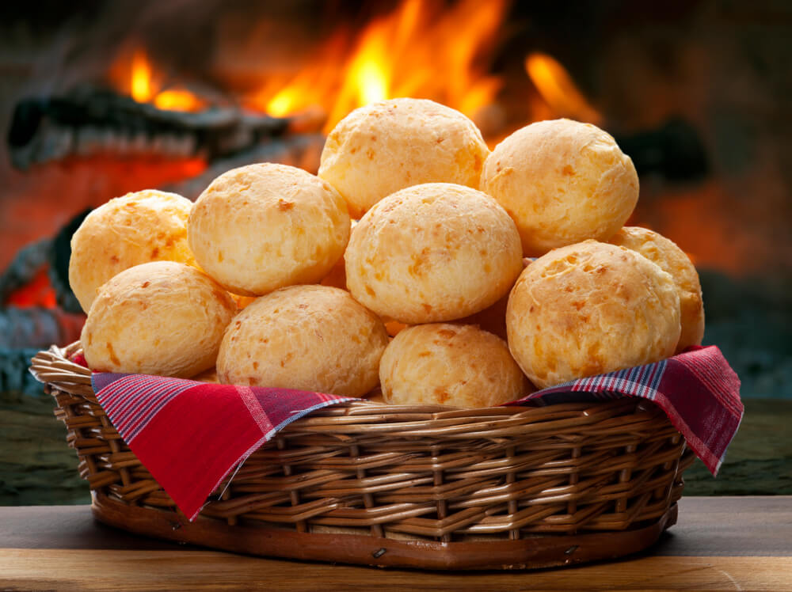

Pão De Queijo

Descrição
O pão de queijo é uma iguaria oriunda da América do Sul, muito apreciada no Brasil.
É uma variação da chipa, receita criada pelas missões jesuíticas, com influências indígena e europeia, que é típica de países como Paraguai e Argentina.
Teria entrado no Brasil por volta da década de 1860.
Tempo de preparo: 35 minutos
Porções: 10 pessoas
Nivel: Fácil
Ingredientes:
- 1/2 copo (de requeijão) de água
- 1 colher (sopa) de sal
- 1/2 copo (de requeijão) de leite
- 1/2 copo (de requeijão) de óleo
- 330 g de polvilho doce
- 2 copos (de requeijão) de queijo parmesão ralado
- 3 ovos caipiras para dar o ponto (pode precisar de mais)
Modo de preparo:
- Misture a água com o sal, o leite e o óleo e leve ao fogo até fervere. Despeje sobre o polvilho e misture para escaldar. Deixe amornar.
- Sove a massa e incorpore o parmesão. Adicione os ovos um a um e sove até a massa ficar maleável e fácil de moldar.
- Com as mãos untadas com óleo, modele bolinhas e disponha em assadeira, mantendo espaço entre elas.
- Leve ao forno médio preaquecido (180 ºC) por 35 minutos ou até dourarem.
HOME